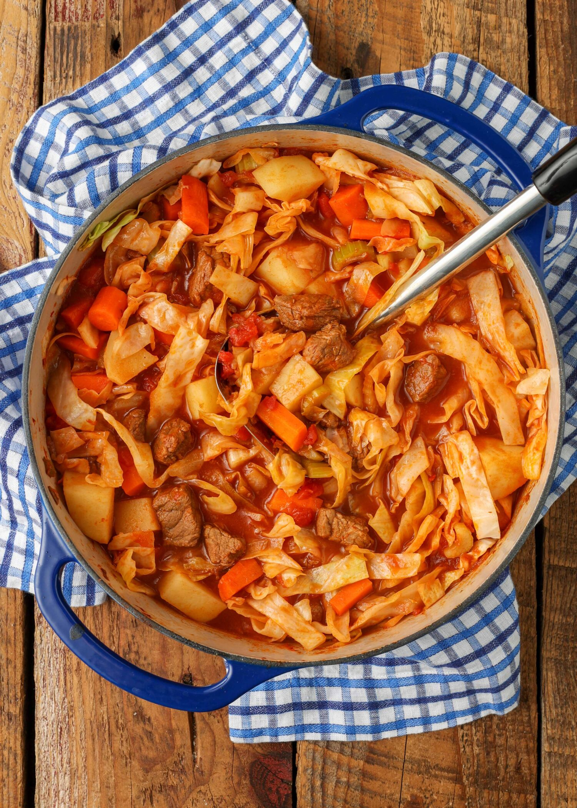

Cabbage Stew

Description
Cabbage Stew is a hearty, wholesome dish featuring tender cabbage simmered with savory spices, tomatoes, and broth. It's a perfect comfort food for a cold day.
Ingredients
- 1 head of cabbage, chopped
- 1 pound ground beef or sausage
- 1 onion, diced
- 3 cloves garlic, minced
- 1 can (14 ounces) diced tomatoes
- 4 cups chicken or vegetable broth
- 1 teaspoon smoked paprika
- Salt and black pepper to taste
Steps
- In a large pot, cook ground beef or sausage until browned. Remove and set aside.
- In the same pot, sauté onion and garlic until fragrant. Add cabbage and cook until slightly softened.
- Return meat to the pot. Stir in tomatoes, broth, smoked paprika, salt, and pepper. Simmer for 30 minutes or until cabbage is tender. Serve hot.